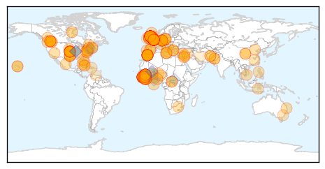
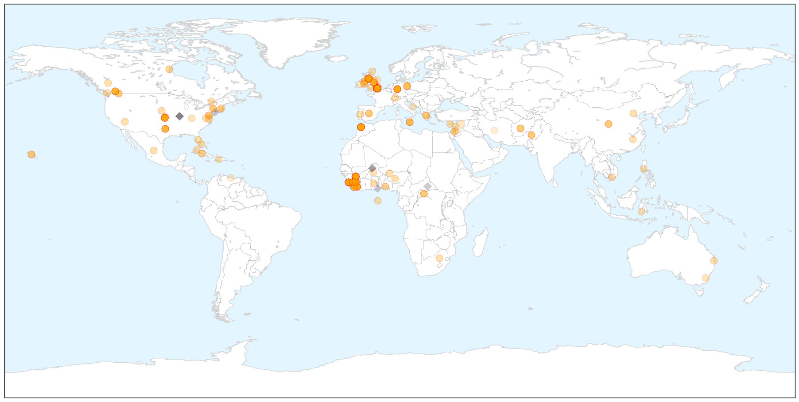
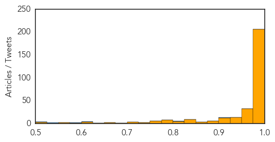

Ebola
30-Day Web Trend
0 alerts, 0 warnings

30-Day Twitter Trend
0 alerts, 0 warnings

Article Locations

X

Article Confidences
Top Articles:
- 1.000
- Health worker with Ebola transferred to London hospital
- 1.000
- Ebola Devastates W. Africa, Horrifies World in 2014
- 1.000
- UK Ebola patient is a nurse volunteer
- 1.000
- Health worker with Ebola transferred to London hospital
- 1.000
- Latest Ebola News: Spread of Ebola epidemic 'unprecedented', says WHO
- 1.000
- B.C. health-care workers returning from West Africa monitored for Ebola
- 1.000
- First Ebola case emerges in Britain
- 1.000
- Patient in Kelowna isolated for Ebola, initial test negative
- 1.000
- UK Ebola case confirmed but risk remains low
- 1.000
- Liverpool experts work on treatment for Ebola using the blood of those who survived the deadly disease
- 1.000
- Ebola response
- 1.000
- Ebola nurse treated in London - World News
- 1.000
- Ebola around the world: Where the virus is now and which countries have beaten it
- 1.000
- Ebola in UK: Two patients being tested for virus at hospitals in Cornwall and Scotland
- 1.000
- Ebola in UK: Infected nurse's diary reveals sadness and stress of treating sick patients
- 1.000
- Ebola in UK: Doctor who sat next to Ebola nurse on flight home speaks of shock at diagnosis
- 1.000
- Ebola in UK: Doctor who flew home with sick Scottish nurse sounds alarm over 'disorganised' Heathrow screening
- 1.000
- Ebola in the UK: Seven reasons Britons should not panic – but should still be alert
- 1.000
- Ebola in the UK: How will nurse be treated at London's Royal Free Hospital – and how can we stop the disease spreading?
- 1.000
- Female Ebola Patient being treated for in Glasgow on return from Sierra Leone
- 1.000
- Ebola nurse treated in London as Sierra Leone rate rises
- 1.000
- Ebola outbreak: Pauline Cafferkey, health worker, being treated in London hospital
- 1.000
- Ebola test negative on Kelowna, B.C., nurse Patrice Gordon
- 1.000
- Death toll from Ebola reaches 8,000 worldwide
- 1.000
- Final Ebola test negative
- 1.000
- Latest UK Ebola victim a nurse volunteer
- 1.000
- Patient being tested for Ebola in Kelowna not believed to be a risk
- 1.000
- Cuban doctor vows to return to fight #Ebola
- 1.000
- Health worker with Ebola transferred to London hospital (updated)
- 1.000
- Health care worker being tested for Ebola virus in B.C.
- 1.000
- Ebola death toll climbs to 7,842: WHO
- 0.999
- Health Worker With Ebola Transferred to London Hospital
- 0.999
- Nurse is first Ebola victim diagnosed in Britain
- 0.999
- Ebola: Nurse receives treatment in London as Sierra Leone infection rate soars
- 0.999
- Scottish Ebola patient arrives in London for treatment
- 0.999
- Health worker with Ebola moved to London
- 0.999
- 2014 the year for worst-ever Ebola outbreak
- 0.999
- U.K. Gets Its First Ebola Patient; U.S. Approves Test
- 0.999
- Ebola patient arrives at London hospital
- 0.999
- Woman with Ebola treated in London hospital - World News
- 0.999
- Why Is Ebola Outbreak In West Africa So Difficult To End?
- 0.999
- Nurse becomes first Ebola victim diagnosed in Britain
- 0.999
- Stories that endure: Fears of dreaded disease unite people around globe
- 0.999
- Second suspected case of Ebola in UK
- 0.999
- Ebola in UK: Nurse diagnosed with virus after returning to Glasgow named as Pauline Cafferkey
- 0.999
- UK health worker to be treated for Ebola at London hospital that cured Pooley
- 0.999
- Ebola-hit nurse transferred to London hospital
- 0.999
- Scottish Ebola Patient Moved to London, Possible Second Case Found
- 0.999
- Ebola nurse treated in London as Sierra Leone rate rises
- 0.999
- Nurse becomes first Ebola victim diagnosed in Britain
Showing top 50 articles...
Top Tweets:
- 0.910
- Lassa Fever another Virus Plaguing West Africa http://t.co/SObb4iCG5e üíâüíäüî¨üè• Vaccine Ebola vaccines = goals for a HappyNewYear
- 0.802
- Lassa Fever another Virus Plaguing West Africa http://t.co/UovTCvr069 üíâüíäüî¨üè• Ebola Marbug & Lassa vaccines = goal 4 a HappyNewYear
- 0.600
- RT: «Africa Stop Ebola»: Fünf Gründe ein westafrikanisches Lied zu kaufen. http://t.co/tAdaoEtiN6 Ebola AfricaStopEbola
- 0.577
- The biggest concern of the Ebola outbreak is political not medical:... http://t.co/mW0lXjUcAz
- 0.546
- The nurse who tested positive for Ebola in Scotland on Monday was working at the Kerry Town treatment centre in SierraLeone.
- 0.535
- Scottish nurse who contracted Ebola in Sierra Leone is named; read an extract from her Freetown diaries http://t.co/qLj34o8n5E
- 0.507
- RT: Anthony Banbury offre ses condoléances aux familles affectées par Ebola et visite le CTCom de Kourémalé. UNMEER http://…